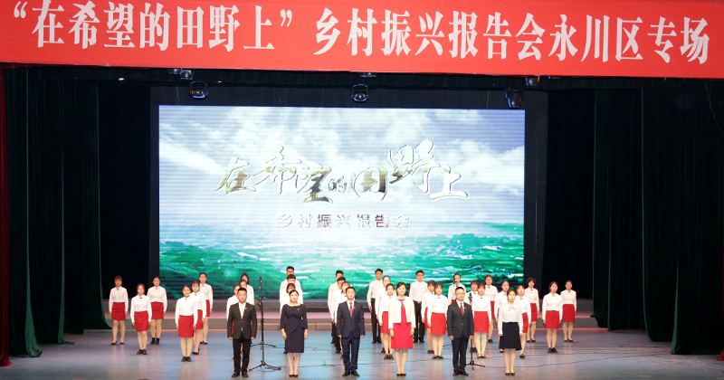

学校新闻
当前位置： 首页 > 学校新闻“在希望的田野上”乡村振兴报告团走进我校开展巡回报告
发布时间：2018-04-04 11:40 浏览：301次 来源：新闻中心4月3日下午，由市委宣传部、市委组织部、市教委、市农委联合组建的“在希望的田野上”乡村振兴报告团走进我校开展巡回报告活动。报告会在永川区文化艺术中心举行，永川区委书记滕宏伟，学校党委书记孙泽平，党委副书记、纪委书记李德全， 来自我校以及在永其他高校师生代表、永川区基层干部代表共850余人参加了报告会。
报告团成员、彭水县花千谷农业旅游开发有限公司总经理晏洲，重庆安益佳实业股份有限公司总经理彭阳，重庆市菊康丽农业综合开发有限责任公司总经理简义相，荣昌区安富街道通安村党总支书记张雪，云阳大可农业开发有限公司总经理杨大可，巫山县当阳乡党政办主任、玉灵村第一书记严克美先后作报告，讲述了自己扎根农村、艰苦创业，积极践行乡村振兴战略，带领并帮扶父老乡亲共同致富的感人事迹。 6名报告人与我校30名学生代表共同诵读了习近平总书记在十九大报告中对青年的寄语。 滕宏伟指出，举办此次报告会对于深入学习贯彻党的十九大精神，认真落实习近平总书记在中央农村工作会议上的重要讲话精神，扎实推进重庆市实施乡村振兴战略行动计划各项部署有着重要意义。他号召全区干部群众积极向报告人学习，用自己的劳动和智慧为乡村振兴战略的实施作出应有贡献。 我校学生代表向报告团成员敬献了鲜花，并表示今后要积极向6名报告人学习，认真学习，深入实践，扎根基层，用自己的实际行动服务于“三农”工作。 报告会后，乡村振兴报告团成员与我校学生代表、永川区青年代表50余人在学校恪勤楼422会议室举行了座谈交流。学校领导孙泽平、李德全，永川区有关部门负责人，媒体记者出席了会议。会议由学校党群部部长周文东主持。